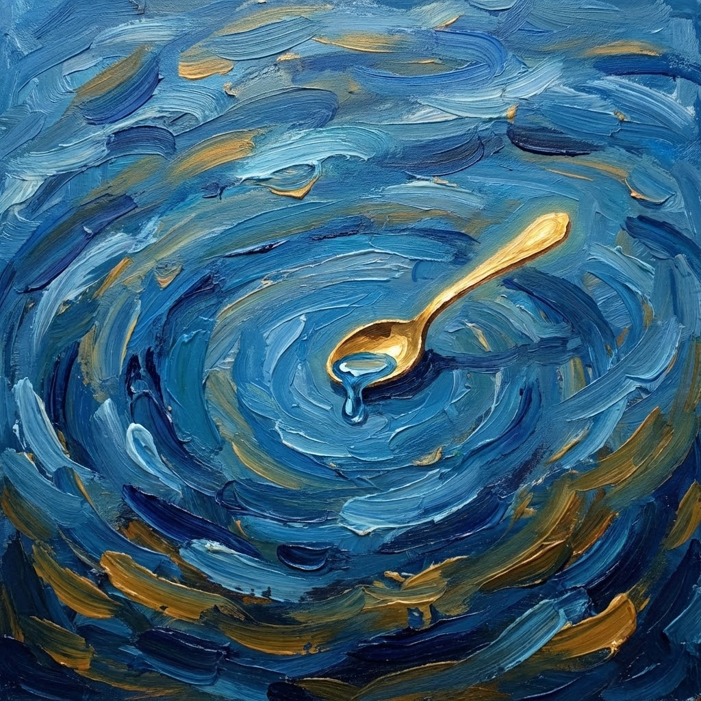

Se ne avessi il tempo

Poesia selezionata - Aletti Editore
Anche se
volessi vuotare il Mare
con un cucchiaino alla volta
se ne avessi il tempo
lo potrei pur fare
volessi vuotare il Mare
con un cucchiaino alla volta
se ne avessi il tempo
lo potrei pur fare
ma mai, mai
anche se ne avessi il tempo
potrei tutto capire.
anche se ne avessi il tempo
potrei tutto capire.
Paola Spremulli